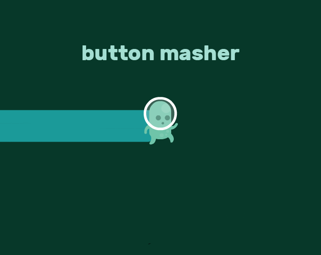

This was one of my more successful projects, earning 3rd place in a Game Jam. The main area for improvement was the visual consistency, as I relied on various free assets found online, which didn’t blend seamlessly. Despite that, the game design was solid—something reflected in the final placement and feedback received as I did get 1st place in that.
Originally, I set out to create an auto-runner with idle-game elements, where the character would run continuously without player input. During development, I ran into challenges getting the character to run autonomously. However, this led to an unexpected pivot: the auto-run mechanic evolved into a boost feature instead. This change ended up enhancing the gameplay by introducing a skill-based element, giving players more control and raising the skill ceiling in a meaningful way.
The future goal for this project is to develop it into a multiplayer browser-based game. I see this as a great opportunity to explore multiplayer game development and gain experience with networking concepts. It would not only expand the game's potential audience but also serve as a strong introduction for me into the world of online multiplayer systems.
gitHub